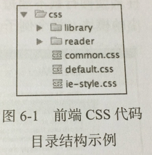
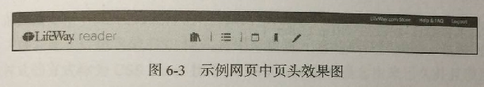
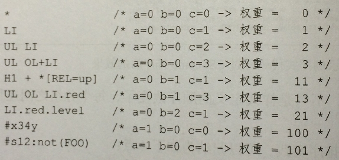

如何高效地组织 CSS 代码
合理的 CSS 代码组织结构可提高代码的重用性和可维护性，降低开发的复杂度。
组织 CSS 代码文件
样式文件 common.css 中放置共通模块的样式和一些基础样式。
共通模块包括：
页面对话框、提示框等共通组件的样式以及页面头部、底部、侧边栏等共通 UI 模块的样式，因为是各页面都要使用的共通部分，所以必须定义在单独的 CSS 样式文件中，供各个页面引用。

基础样式包括：
全局页面的页面布局设置、字体设置、背景和前景色，也包括一些公有的 class，这些公有的 class 使用频繁，所以需要单独定义和使用，以提高代码的复用度。
ie-style.css
样式文件 ie-style.css 中放置兼容旧版本 IE 浏览器的样式。
在页面中使用 IE 浏览器特独有的条件注释方式引用此样式文件。
1 | <!-- [if It IE 8]> |
从直观的效果来看，页面布局分为头部、主体、尾部三个部分，则 CSS 文件至少也应该分割为三个。
在开发开始的阶段，按照对应的模块定义 3 个 CSS 样式文件为：reader.header.css reader.content.css reader.footer.css
在模块内部定义样式应该遵循什么规则呢？
首先要关注的是样式声明的顺序。
样式声明的顺序应该是按照模块中元素的层级关系来处理。
先从父元素开始定义。
如果是同一级的元素，按照元素在页面的位置从上到下，从左到右地定义对应的样式。
在多个元素公用相同的声明时，则先声明共通样式，然后声明个体样式。

按照上述的规则，定义的 CSS 样式框架应该如下：
1 | <style> |
使用 CSS Reset：统一浏览器显示效果
针对不同的项目不同的样式重置方案，而不是照搬别人的完整方案，因为并不存在一个最佳的并且适合所有项目的样式重置解决方案。
HTML5 中的新标签
如果在项目中需要使用 HTML5 中新添加的标签，重置这些标签的 display 样式。
1 | header, |
padding、margin 和 border
标签在浏览器之间的差异主要是由这三个样式有关的默认样式产生的。
雅虎 YUI 的方案中重置了部分元素的 margin 和 padding 样式。
1 | <style> |
字体设置
代码片段来源于 YUI 框架
1 | <style> |
其他元素的样式重置
列表元素实际项目中很少会使用默认的列表样式：
1 | <style> |
表格元素的样式重置的目的就是重置单元格之间的默认空间，重置样式代码如下：
1 | <style> |
在大部分情况下，链接并没有设计为有下划线的形式：
1 | <style> |
还有一些其他需要重置样式的元素，包括 sup、sub、del、ins、q、blockquote 等。
应该根据实际的项目需求，决定是否在重置样式中添加针对这些元素样式的重置。
下面是 YUI 框架中针对部分元素的重置方案。
1 | <style> |
给 CSS 样式定义排序
- 对 CSS 样式排序
- 按样式属性功能分组排序
- 在 CSS 样式代码编写完成并准备嵌入的时候进行排序
- 使用如 CSSComb 等工具排序
合理使用 CSS 的权重：提高代码的重用性
CSS 权重通过以下方式计算：
- 选择符中 ID 选择器的数量
a - 选择符中类选择器、属性选择器、伪类选择器的数量
b - 标签选择器和伪对象选择器
c - 忽略全局选择器
a100 + b10 + c*1

如果两个选择符权重相同，最后定义的选择符将会被采用。
定义选择符的原则是尽量使选择符的权重低，目的是保证样式在应用于多个元素时容易被覆盖，这样可以提高代码的重用性和可维护性。
以下是一些具体原则：
CSS 样式中尽量不要使用 ID 选择器
- 使用 ID 选择器说明此样式只能作用于一个元素，样式没办法重用。
- ID 选择器权重高，如果要覆盖使用了 ID 选择器的样式，就要在原来的基础上再加新的选择符，或者使用
!important，这样的结果就是 无法重用的代码越来越多。
减少子选择器的层级
如果代码中出现子选择器层级过多的情况，大多是因为样式代码整体的结构混乱。
在向其中一个模块添加样式时，为了避免样式 “污染” 其他模块，就会添加额外的父选择器来限定样式的作用域。
使用组合的 CSS 类选择器
继承的概念是依照需求来抽象一个包含几乎所有方法和属性的父类，定义的各子类继承此父类，并根据自身需求添加新的方法和属性，或者覆盖与父类有逻辑差异的方法和属性。
继承的缺点是：如果有任何一点新的变化，并且无法用现有的类实例化新的需求，则需要重新定义一个子类，如果处理不当，会导致类的爆炸式增长。
这个缺点可以用组合的方式避免。
类的组合
组合的概念是把一个复杂的父类中的 可变部分 和 稳定部分 分割开来，把稳定部分作为主体类，至于可变部分，则按照逻辑分为几个简单地类，类与类之间没有继承关系。这些容易变化的类的实例设置为主体类的属性，从而实现了类的组合。
使用类的组合的好处是：
- 减少了类的数量
- 提高代码的重用性
1 | <style type="text/css"> |
CSS 代码的兼容性：如何兼容 IE 浏览器
为了兼容旧版本浏览器而添加的额外代码，被称为 hack 代码。
熟悉 IE 浏览器中常见的样式兼容问题
分离样式兼容代码
在 IE 浏览器中可以使用条件注释，让不同的浏览器加载不同的样式文件以达到兼容代码和正常代码分离的目的。
1 | <link rel="stylesheet" href="css/style.css" media="screen"> |
为了提高兼容样式的优先级，可以在根元素上针对不同的浏览器添加不同的样式类：
1 | <!-- [if IE 7]> <html class="ie7"> <![endif]--> |
em、px 还是 %
px
Pixel 的缩写，表示像素。
em
em 是个相对单位，等同于元素上计算的字体大小值。
百分比
相对于父元素尺寸来计算。
最佳实践
尽量设置相对尺寸
局部的元素尺寸尽量使用相对尺寸，即局部自适应，这样，当整体模块的尺寸更改时就不需要更改模块内部子模块的尺寸了。
1 | <style> |
两个相对宽度加上右外边距的和接近百分之百。
只有在可预知元素尺寸的情况下才使用绝对尺寸
设计上要求使用绝对宽度的则必须使用绝对宽度。
例如，网页的整体宽度固定、侧边栏宽度固定、页头和页尾的高度固定
使用 em 设置字体大小
在使用 em 设置字体大小时应该避免设置超过两层的字体相对尺寸。
rem 相对于根元素的字体大小来计算的。